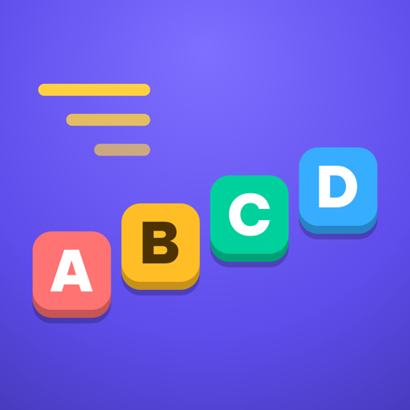

Nhanh Tay
4つの答えを正しい順番に。素早く！
どんなゲーム？
Nhanh Tay（ベトナム語で「素早い手」）は、スピード勝負の並べ替えゲームです。どの問題にも A〜D の4つの答えがあります。時間切れになる前に、正しい順番でタップしてください。小さい順、古い順、手順の順番、あるいはことわざの言葉の順番など。
- 表示されるあいだに考える。問題文が1文字ずつ表示され、答えが1つずつ現れます。タイマーが動き出すのは、4つの答えがそろってからです。
- ライフはなし。順番を間違えても、直すまで待ってくれます。でも初めて時間切れになったら、そこでゲームオーバー。10問ごとに制限時間が短くなります。
- 2つのクイズ。ベトナム語150問と英語150問を、それぞれ別に書き下ろしました。問題はゲーム内で選んだ言語に合わせて切り替わります。
- 速い指のために。触覚フィードバック付きの大きなボタン、合成した効果音と音楽、ライトとダーク。iPhone、iPad、Android タブレットに対応。
- リーダーボードと達成項目。iPhone と iPad では Game Center、Android では Google Play Games。ベストスコアと達成項目はデバイスにも保存されるので、サインインしていなくてもオフラインでも、ゲームはすべて楽しめます。
iOS および iPadOS 17 以降の iPhone と iPad。Android 8 以降。
プライバシーをひとことで
Nhanh Tay には広告も分析もトラッキングもアカウントもなく、データを一切収集しません。ネットワークを使うのはプラットフォームのゲームサービス（Game Center または Google Play Games）だけで、それもサインインしているときに限ります。詳しくはプライバシーポリシーに同じ内容をより詳しく書いています。
同じ開発者のほかのアプリ
ひとつのことをきちんとこなす、小さなアプリたち。アカウントも広告もなく、どれもあなたを追跡しません。
 StatuetteCPU・メモリ・ディスク・ネットワークをメニューバーに。Mac
StatuetteCPU・メモリ・ディスク・ネットワークをメニューバーに。Mac Tocketteメニューバーからドラッグするだけのタイマー。Mac
Tocketteメニューバーからドラッグするだけのタイマー。Mac Zonette気になるタイムゾーンを、ワンクリックで。MaciPhone・iPadAndroid
Zonette気になるタイムゾーンを、ワンクリックで。MaciPhone・iPadAndroid Lunette月と太陽を、ひと目で。MaciPhone・iPadAndroid
Lunette月と太陽を、ひと目で。MaciPhone・iPadAndroid Lunarette4つの伝統の旧暦カレンダー。MaciPhone・iPadAndroid
Lunarette4つの伝統の旧暦カレンダー。MaciPhone・iPadAndroid Pausette目と背中に、やさしい休憩を。Mac
Pausette目と背中に、やさしい休憩を。Mac Poisette着けているAirPodsが、背すじを伸ばすよう知らせます。MaciPhone・iPad
Poisette着けているAirPodsが、背すじを伸ばすよう知らせます。MaciPhone・iPad Hushetteループしない、穏やかな環境音。MaciPhone・iPadAndroid
Hushetteループしない、穏やかな環境音。MaciPhone・iPadAndroid Tapsodyタイプするたびにメカニカルキーボードの音。Mac
Tapsodyタイプするたびにメカニカルキーボードの音。Mac Thrumline心拍数を、メニューバーでリアルタイムに。Mac
Thrumline心拍数を、メニューバーでリアルタイムに。Mac NightjarMacをスリープさせません。正直に。Mac
NightjarMacをスリープさせません。正直に。Mac Umbrette作業中のウインドウ以外をすべて暗く。Mac
Umbrette作業中のウインドウ以外をすべて暗く。Mac Prompetteカメラのすぐ下にプロンプター。MaciPhone・iPadAndroid
Prompetteカメラのすぐ下にプロンプター。MaciPhone・iPadAndroid Tallette計算のための紙テープ。MaciPhone・iPadAndroid
Tallette計算のための紙テープ。MaciPhone・iPadAndroid Probetteメディアファイルの技術情報を、わかりやすい言葉で。MaciPhone・iPadAndroid
Probetteメディアファイルの技術情報を、わかりやすい言葉で。MaciPhone・iPadAndroid Bindette音声ファイルを、1冊のちゃんとしたオーディオブックに。MaciPhone・iPadAndroid
Bindette音声ファイルを、1冊のちゃんとしたオーディオブックに。MaciPhone・iPadAndroid Lettrettewinmail.datと.msgファイルを、送られたとおりに開きます。MaciPhone・iPad
Lettrettewinmail.datと.msgファイルを、送られたとおりに開きます。MaciPhone・iPad